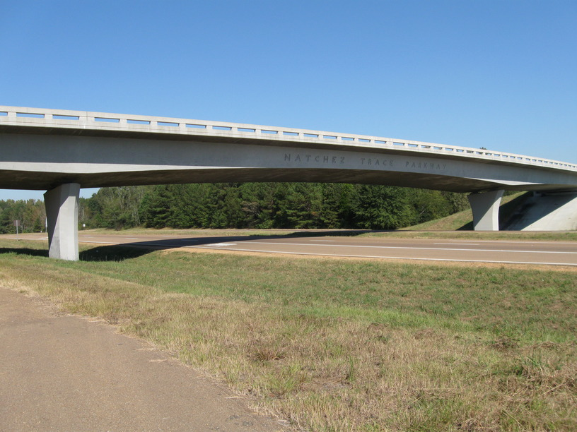
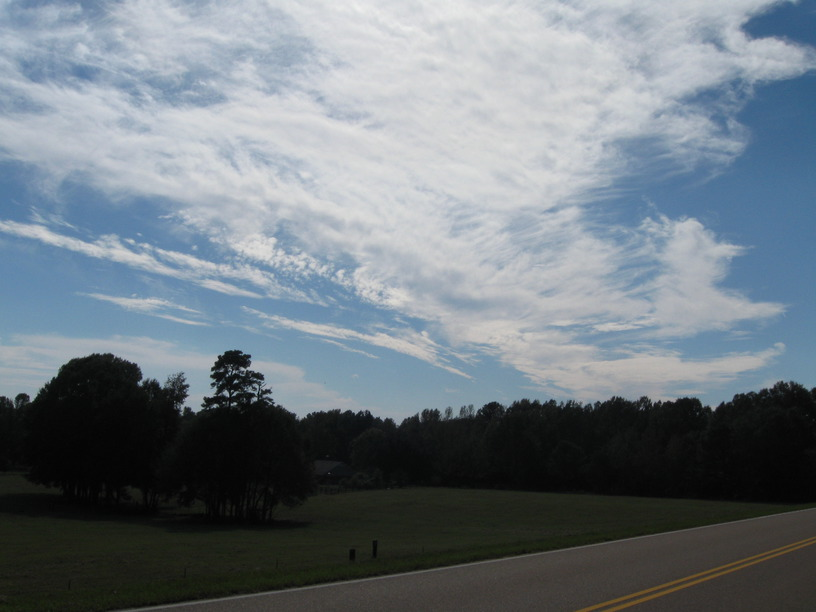
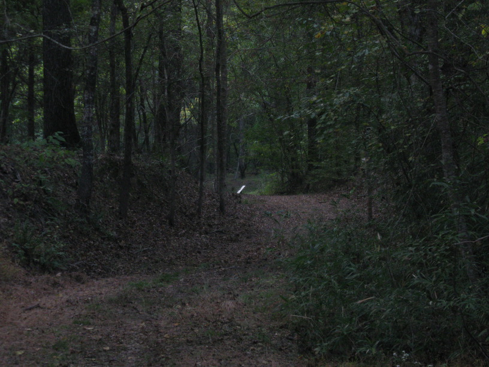
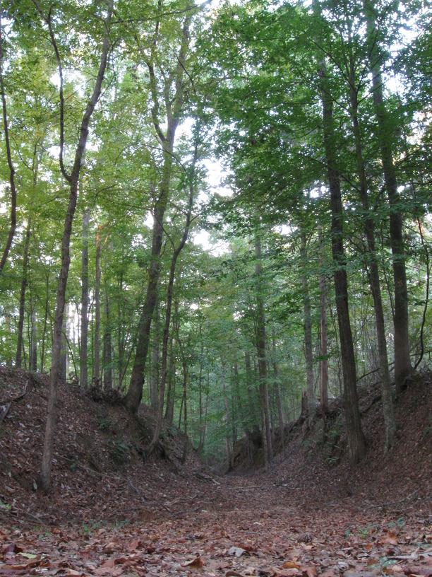

22 Oct 2008, Hermanville, MS
Another uneventful (and short) day. I found my way through Jackson to buy more fuel for my stove, but that was the only interesting thing, really. I got into camp early enough to hike ~1 mile on the old Trace, which was pretty too.



